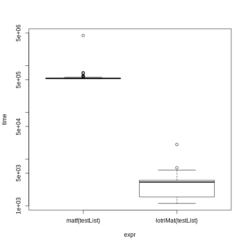

The goal of lotri is to easily specify block-diagonal matrices with (lo)wer (tri)angular matrices. Its as if you have won the (badly spelled) lotri (or lottery).
This was made to allow people (like me) to specify lower triangular matrices similar to the domain specific language implemented in nlmixr. Originally I had it included in RxODE, but thought it may have more general applicability, so I separated it into a new package.
Installation
You can install the released version of lotri from CRAN with:
install.packages("lotri")And the development version from GitHub with:
# install.packages("devtools")
devtools::install_github("nlmixrdevelopment/lotri")Example
This is a basic example for an easier way to specify matrices in R. For instance to fully specify a simple 2x2 matrix, in R you specify:
With lotri, you simply specify:
I find it more legible and easier to specify, especially if you have a more complex matrix. For instance with the more complex matrix:
mat <- lotri({
a+b ~ c(1,
0.5, 1)
c ~ 1
d +e ~ c(1,
0.5, 1)
})
print(mat)
#> a b c d e
#> a 1.0 0.5 0 0.0 0.0
#> b 0.5 1.0 0 0.0 0.0
#> c 0.0 0.0 1 0.0 0.0
#> d 0.0 0.0 0 1.0 0.5
#> e 0.0 0.0 0 0.5 1.0To fully specify this in base R you would need to use:
mat <- matrix(c(1, 0.5, 0, 0, 0,
0.5, 1, 0, 0, 0,
0, 0, 1, 0, 0,
0, 0, 0, 1, 0.5,
0, 0, 0, 0.5, 1),
nrow=5, ncol=5,
dimnames= list(c("a", "b", "c", "d", "e"),
c("a", "b", "c", "d", "e")))
print(mat)
#> a b c d e
#> a 1.0 0.5 0 0.0 0.0
#> b 0.5 1.0 0 0.0 0.0
#> c 0.0 0.0 1 0.0 0.0
#> d 0.0 0.0 0 1.0 0.5
#> e 0.0 0.0 0 0.5 1.0Of course with the excellent Matrix package this is a bit easier:
library(Matrix)
mat <- matrix(c(1, 0.5, 0.5, 1),
nrow=2,
ncol=2,
dimnames=list(c("a", "b"), c("a", "b")))
mat <- bdiag(list(mat, matrix(1), mat))
## Convert back to standard matrix
mat <- as.matrix(mat)
##
dimnames(mat) <- list(c("a", "b", "c", "d", "e"),
c("a", "b", "c", "d", "e"))
print(mat)
#> a b c d e
#> a 1.0 0.5 0 0.0 0.0
#> b 0.5 1.0 0 0.0 0.0
#> c 0.0 0.0 1 0.0 0.0
#> d 0.0 0.0 0 1.0 0.5
#> e 0.0 0.0 0 0.5 1.0Regardless, I think lotri is a bit easier to use.
Creating lists of matricies with attached properties
lotri also allows lists of matrices to be created by conditioning on an id with the | syntax.
For example:
mat <- lotri({
a+b ~ c(1,
0.5, 1) | id
c ~ 1 | occ
d +e ~ c(1,
0.5, 1) | id(lower=3, upper=2, omegaIsChol=FALSE)
})
print(mat)
#> $id
#> d e
#> d 1.0 0.5
#> e 0.5 1.0
#>
#> $occ
#> c
#> c 1
#>
#> Properties: lower, upper, omegaIsChol
print(mat$lower)
#> $id
#> d e
#> 3 3
#>
#> $occ
#> c
#> -Inf
print(mat$upper)
#> $id
#> d e
#> Inf Inf
#>
#> $occ
#> c
#> Inf
print(mat$omegaIsChol)
#> $id
#> [1] FALSEThis gives a list of matrix(es) conditioned on the variable after the |. It also can add properties to each list that can be accessible after the list of matrices is returned, as shown in the above example. To do this, you simply have to enclose the properties after the conditional variable. That is et1 ~ id(lower=3).
Combining symmetric named matrices
Now there is even a faster way to do a similar banded matrix concatenation with lotriMat
testList <- list(lotri({et2 + et3 + et4 ~ c(40,
0.1, 20,
0.1, 0.1, 30)}),
lotri(et5 ~ 6),
lotri(et1+et6 ~c(0.1, 0.01, 1)),
matrix(c(1L, 0L, 0L, 1L), 2, 2,
dimnames=list(c("et7", "et8"),
c("et7", "et8"))))
matf <- function(.mats){
.omega <- as.matrix(Matrix::bdiag(.mats))
.d <- unlist(lapply(seq_along(.mats),
function(x) {
dimnames(.mats[[x]])[2]
}))
dimnames(.omega) <- list(.d, .d)
return(.omega)
}
print(matf(testList))
#> et2 et3 et4 et5 et1 et6 et7 et8
#> et2 40.0 0.1 0.1 0 0.00 0.00 0 0
#> et3 0.1 20.0 0.1 0 0.00 0.00 0 0
#> et4 0.1 0.1 30.0 0 0.00 0.00 0 0
#> et5 0.0 0.0 0.0 6 0.00 0.00 0 0
#> et1 0.0 0.0 0.0 0 0.10 0.01 0 0
#> et6 0.0 0.0 0.0 0 0.01 1.00 0 0
#> et7 0.0 0.0 0.0 0 0.00 0.00 1 0
#> et8 0.0 0.0 0.0 0 0.00 0.00 0 1
print(lotriMat(testList))
#> et2 et3 et4 et5 et1 et6 et7 et8
#> et2 40.0 0.1 0.1 0 0.00 0.00 0 0
#> et3 0.1 20.0 0.1 0 0.00 0.00 0 0
#> et4 0.1 0.1 30.0 0 0.00 0.00 0 0
#> et5 0.0 0.0 0.0 6 0.00 0.00 0 0
#> et1 0.0 0.0 0.0 0 0.10 0.01 0 0
#> et6 0.0 0.0 0.0 0 0.01 1.00 0 0
#> et7 0.0 0.0 0.0 0 0.00 0.00 1 0
#> et8 0.0 0.0 0.0 0 0.00 0.00 0 1
mb <- microbenchmark::microbenchmark(matf(testList),lotriMat(testList))
print(mb)
#> Unit: microseconds
#> expr min lq mean median uq max neval
#> matf(testList) 521.177 527.444 582.2390 530.929 543.0650 4388.479 100
#> lotriMat(testList) 1.129 1.556 2.8632 3.237 3.5465 20.545 100
plot(mb, log="y")
New features
A new feature is the ability to condition on variables by |. This will be useful when simulating nested random effects using the upcoming RxODE